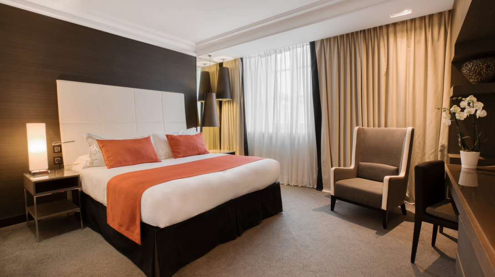
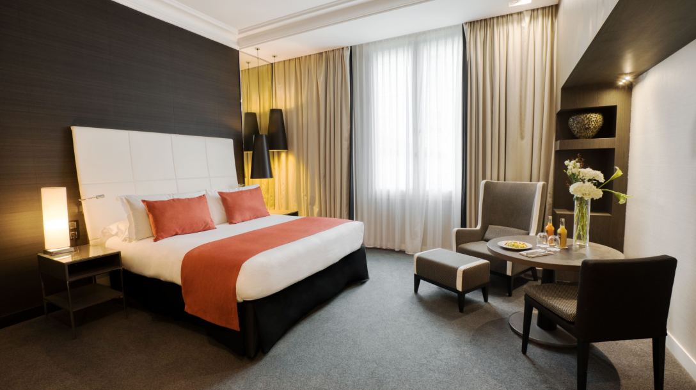
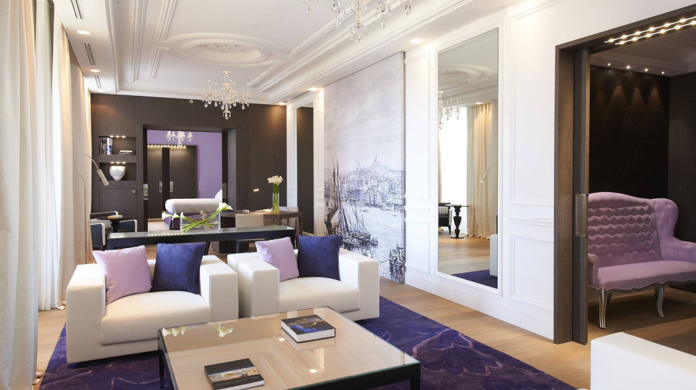
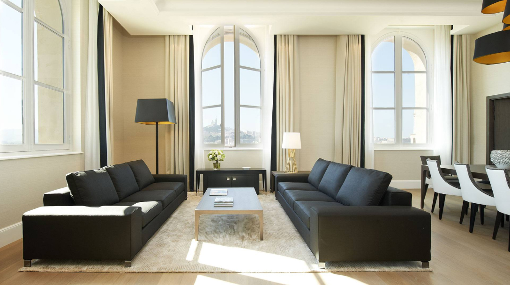
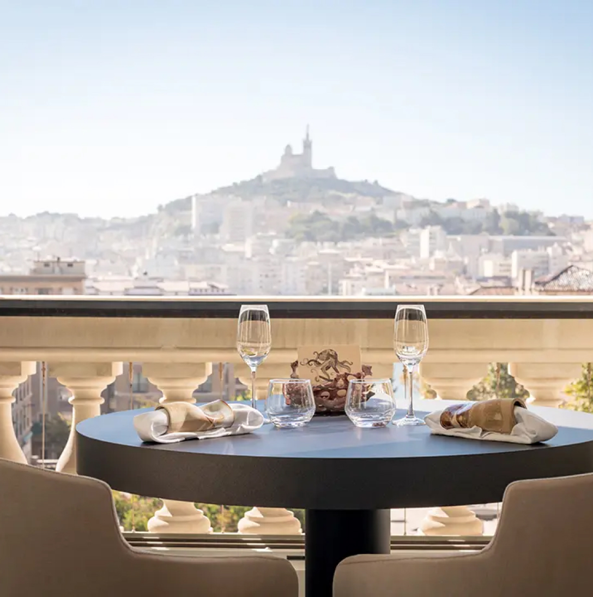
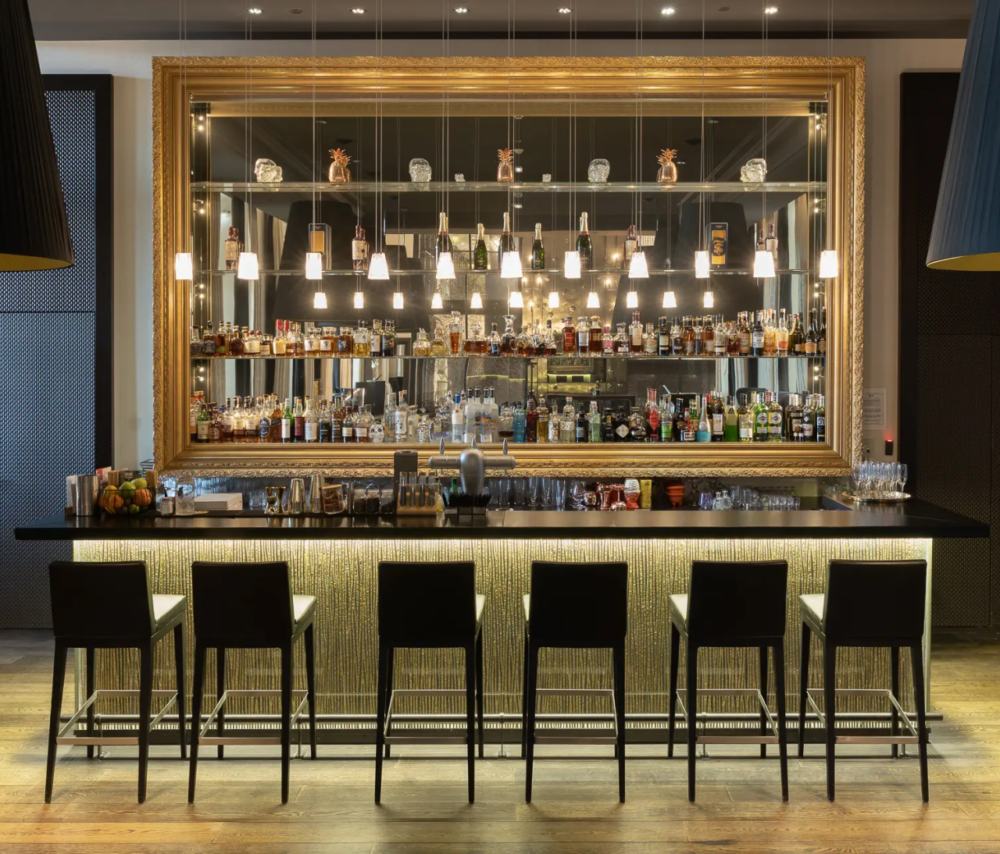

Nos jeux sont destinés à un public ADULTE de plus de 18 ans. Cliquez sur Accepté pour
confirmer votre âge.
InterContinental Marseille
Hôtel à Marseille
L'InterContinental Marseille est l'un des meilleurs hôtels de Marseille, très bien noté et offrant une
sécurité maximale.
À propos de l'hôtel
Vacances luxueuses
Situé sur la promenade Via Porto, l'hôtel offre une vue magnifique sur la mer et la ville historique. Les
chambres et suites luxueuses sont élégamment décorées et équipées de toutes les commodités modernes pour
assurer votre confort et votre satisfaction. Vous pouvez profiter de la vue magnifique depuis les fenêtres
et passer de bons moments dans des intérieurs confortables.
L'InterContinental Marseille accorde une grande importance à la sécurité de ses clients. Des mesures
spéciales sont prises pour assurer la sécurité et le confort de chaque invité. L'hôtel est équipé de
systèmes de vidéosurveillance modernes, de sécurité et de respect de toutes les mesures d'hygiène et de
sécurité.
L'hôtel propose également les meilleurs services pour rendre votre séjour mémorable. Vous pouvez déguster
une délicieuse cuisine dans les restaurants et bars de l'hôtel, utiliser le spa et la salle de remise en
forme, ainsi que bénéficier des services de conciergerie et du centre d'affaires.
Rester
Chambres et suites

Chambre classique
La Chambre Classique de l'InterContinental Marseille est l'une des meilleures de sa catégorie,
offrant confort et luxe alliés à un haut niveau de sécurité.

Chambre Premium
Vous trouverez un lit confortable avec des draps doux, une salle de bains spacieuse avec des
équipements modernes et des serviettes moelleuses.

Les Suites
La Suite de l'InterContinental Marseille est le summum du luxe et du confort, offrant à ses clients
un séjour inoubliable.

Suite Prestige
La Chambre Classique de l'InterContinental Marseille est l'une des meilleures de sa catégorie,
offrant confort et luxe alliés à un haut niveau de sécurité.

Restaurant
Profitez d'un somptueux dîner
Le restaurant propose un délicieux menu avec une variété de plats préparés à partir d'ingrédients frais
et sélectionnés. Les chefs préparent soigneusement chaque plat pour satisfaire les goûts les plus
sophistiqués des convives. Des excellents classiques français aux plats internationaux, le restaurant
propose une grande variété pour tous les goûts.
De plus, le restaurant offre un environnement élégant et confortable où les clients peuvent profiter
d'une atmosphère agréable et de belles vues sur le paysage environnant. Le personnel amical et
attentionné du restaurant est toujours prêt à accueillir les clients avec le sourire et à fournir un
haut niveau de service.

Il y a
Profitez de vos boissons
Le bar de l'InterContinental Marseille à Marseille est un lieu spacieux et élégant qui a acquis une
bonne note et une réputation comme l'un des meilleurs de la ville. Il présente un intérieur attrayant,
idéal pour se détendre après une journée bien remplie.
Le bar propose une large sélection de cocktails, boissons et vins des meilleurs producteurs. Les clients
se voient également proposer un riche menu de collations et d'apéritifs, spécialement conçus pour
accompagner les boissons et satisfaire les gourmets les plus exigeants.